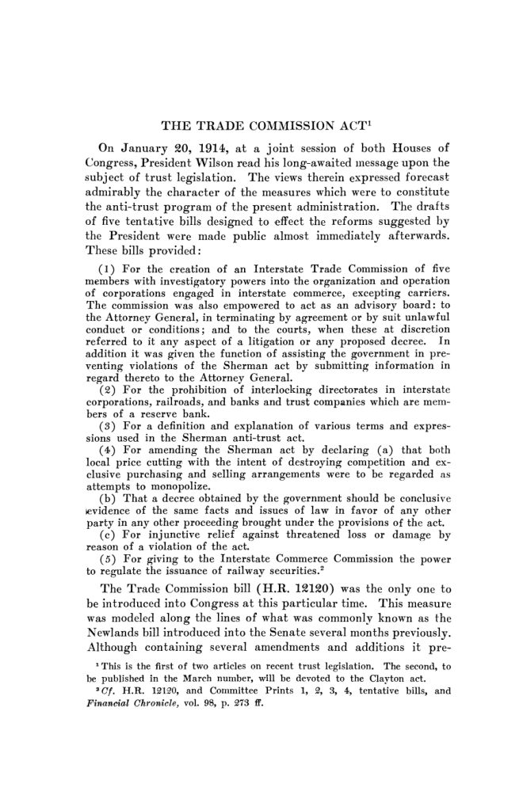

Stevens e a lei que criou a Federal Trade Commission
Leitura: 8 min
W. H. S. Stevens acompanha a lei da Federal Trade Commission da mensagem de Wilson à sanção, em setembro de 1914, e pergunta, poder por poder, o que ela acrescenta ao que já existia contra os trustes.


Em 20 de janeiro de 1914, numa sessão conjunta das duas Casas do Congresso, o presidente Woodrow Wilson leu a mensagem sobre a legislação antitruste que vinha sendo esperada. Em 26 de setembro, assinou a lei que criou a Federal Trade Commission. W. H. S. Stevens, da Columbia University, dedica o artigo a esse intervalo e, depois, a uma pergunta mais difícil: o que a nova comissão poderia fazer que o governo ainda não fizesse.
O texto, no número de dezembro de 1914 da American Economic Review, é o primeiro de dois sobre a legislação antitruste daquele ano. O segundo, anunciado para março, trataria da lei Clayton, que dava à comissão outros poderes; Stevens avisa que um juízo final sobre ela depende também dessa outra lei.
Como a lei passou pelo Congresso?
Logo depois da mensagem, foram divulgados cinco projetos preliminares: uma comissão de comércio interestadual com poderes de investigação, a proibição de diretorias entrelaçadas, uma definição dos termos do Sherman Act, emendas a essa lei e o controle das emissões de títulos ferroviários pela Interstate Commerce Commission. O projeto da comissão, apresentado na Câmara e no Senado, seguia o modelo de um projeto anterior do senador Newlands.
Na Câmara, um subcomitê presidido por J. Harry Covington, de Maryland, redigiu um texto novo em março, revisto em abril. Ele passou em 5 de junho, em votação simbólica, depois de derrotada uma moção para devolvê-lo à comissão. No Senado, a comissão de comércio interestadual o reescreveu e acrescentou o dispositivo que daria à comissão jurisdição sobre a concorrência desleal, e o debate se concentrou nesse ponto.
Uma comissão de conferência das duas Casas levou cerca de um mês para fundir os textos. O projeto foi apresentado ao presidente em 15 de setembro e sancionado em 26. O projeto sobre títulos ferroviários teve outro destino: segundo Stevens, a guerra europeia levou o presidente a aceitar seu adiamento pelo menos até o fim da sessão.
Como é a comissão?
São cinco membros, no máximo três do mesmo partido. Os primeiros têm mandatos de três, quatro, cinco, seis e sete anos; os sucessores, de sete. Com a instalação da comissão, o Bureau of Corporations deixa de existir: suas investigações em curso, seus funcionários, seus arquivos e suas verbas passam à comissão.
Os poderes de assessoria acrescentam algo?
Stevens agrupa os poderes em quatro: reorganizar empresas e propor sentenças, investigar, exigir relatórios e classificar empresas, e impedir a concorrência desleal. Sem este último, diz, sobraria pouco além de um órgão de investigação.
A pedido do Attorney General, a comissão pode recomendar a reorganização de uma empresa acusada de violar as leis antitruste; e, numa ação movida pelo governo, o tribunal pode remeter o caso à comissão, como master in chancery, para que proponha a forma da sentença. Nos dois casos a consulta é facultativa, e a recomendação não obriga. Stevens pergunta por que a lei não tornou obrigatória a consulta, já que a comissão estaria mais bem equipada que o Attorney General para desenhar uma reorganização economicamente satisfatória, e considera que a remessa obrigatória aos tribunais seria matéria processual, portanto constitucional.
Há também um argumento contrário. O Bureau of Corporations já prestara esse serviço ao Departamento de Justiça, ao menos na dissolução do truste do tabaco, e suas funções poderiam ter sido ampliadas sem criar comissão alguma. Stevens pondera, porém, que a comissão tem autorização expressa, que o Bureau não tinha, e que suas conclusões terão mais peso.
O que há de novo nos poderes de investigação?
Pouco, em parte. O poder geral de investigar empresas do comércio interestadual repete a lei de 1903 que criou o Bureau of Corporations, com a diferença de excluir também os bancos. O de investigar violações das leis antitruste a pedido do presidente ou do Congresso já era exercido pelo serviço de investigação do Departamento de Justiça, cujos agentes participaram, em 1912, de uma média mensal de mais de 41 investigações de denúncias antitruste, e de mais de 36 em 1913. O de fiscalizar o cumprimento de sentenças também poderia ser exercido pelo Departamento.
É novo o poder de investigar as condições do comércio exterior, onde associações ou práticas de fabricantes e comerciantes possam afetar o comércio americano. E o poder de requisitar documentos e convocar testemunhas, embora já existisse no Bureau, vale agora para um conjunto muito maior de funções.
Stevens dá peso especial à exigência de relatórios. A versão da Câmara obrigava a relatórios anuais as empresas com mais de US$ 5 milhões de capital, critério que o autor julga largo demais; a lei final deixa a escolha à comissão, que pode classificar as empresas e prescrever formulários. Com isso seria possível exigir contas uniformes de um truste e de seus concorrentes independentes e responder, pelos custos de produção e venda, qual tipo de organização é mais eficiente, questão para a qual, diz ele, ainda não havia dados.
Por que a concorrência desleal é o poder central?
A lei declara ilícitos os métodos desleais de concorrência e manda a comissão impedi-los. O procedimento é simples: a comissão emite uma queixa, marca audiência com pelo menos trinta dias de antecedência, ouve a parte e, se concluir pela ilicitude, ordena a cessação. Se a ordem não for cumprida, recorre ao Circuit Court of Appeals, que pode confirmá-la, modificá-la ou anulá-la; as conclusões de fato da comissão apoiadas em prova são definitivas, e a Suprema Corte só revê por certiorari.
Seria necessário? Pode-se sustentar, admite Stevens, que todos os métodos desleais já caíam sob o Sherman Act, como mostram sentenças contra a American Thread, a Burroughs Adding Machine e a General Electric. Mas os tribunais podiam interpretar a lei de modo estrito, e muitas ordens da comissão nunca chegarão a eles, por serem cumpridas ou não contestadas. Cinco especialistas decidiriam com fundamentos econômicos, e não apenas jurídicos. O autor só teme a cláusula que exige interesse público no processo, se for lida de modo estreito.
“Um passo importante na direção de eliminar essas práticas.” (“an important step in the direction of eliminating those practices”)
A lei tem meios de se fazer cumprir?
Em última instância, as ordens da comissão dependem de injunções judiciais e do processo por desacato. Stevens lembra que, em artigo anterior, defendera a prisão como pena única para a concorrência desleal, e reconhece o argumento de que nenhum júri condenaria sabendo que a prisão seria inevitável. Enquanto isso, uma empresa pode usar os métodos que quiser até a comissão intervir, e continuar até a sentença do tribunal.
Numa nota de rodapé, o autor pergunta: enquanto os lucros da violação excederem as multas, as violações não continuarão, venham as multas de processos criminais ou de desacato? A lei prevê multas e prisão para quem se recusar a depor ou a entregar documentos, falsificar relatórios ou destruir provas.
Na minha leitura
Na minha leitura, o método de Stevens é o da análise institucional comparada: para cada poder, ele pergunta quem já o exercia, com que base legal e com que resultados, e só depois avalia o ganho. Isso separa o que a lei realmente cria, a investigação do comércio exterior, a classificação de empresas e o poder de ordenar a cessação de práticas desleais, do que apenas transfere de um órgão a outro.
O ponto de economia está na ligação entre informação e política. Stevens percebe que a disputa entre regular os grandes grupos e desmembrá-los dependia de uma pergunta empírica, a de qual organização produz mais barato, e que a lei dava pela primeira vez o instrumento para respondê-la: contas uniformes por classe de empresas. A discussão sobre penas segue a mesma lógica econômica: uma proibição só muda o comportamento se o custo esperado da violação superar o ganho.
Glossário
- Federal Trade Commission
- comissão federal criada em 1914 para investigar empresas e impedir métodos desleais de concorrência.
- Bureau of Corporations
- órgão federal criado em 1903 para investigar empresas do comércio interestadual, extinto com a criação da comissão.
- Sherman Act
- lei antitruste federal de 1890, que proíbe restrições ao comércio e a monopolização.
- Master in chancery
- auxiliar do tribunal que examina a causa e propõe a decisão, sem decidi-la.
- Certiorari
- recurso pelo qual a Suprema Corte decide rever, a seu critério, uma decisão de tribunal inferior.
- Diretorias entrelaçadas (interlocking directorates)
- presença das mesmas pessoas nas diretorias de empresas diferentes.
Fontes
- The Trade Commission Act — W. H. S. Stevens (Columbia University) (pp. 840–855). JSTOR · Internet Archive (PDF)
- Edição completa, com os demais artigos: Nº 133 do Arquivo.
Documento em domínio público (EUA, publicado antes de 1931), via JSTOR Early Journal Content e Internet Archive. Resumo e comentário do autor deste site, sem afiliação com a American Economic Association. Encontrou um erro? Escreva: a correção é publicada no próprio texto, com data.
← Rubinow e o índice de salários reais que o governo deixou de publicar ↑ Nº 133 · Salários que perdem para a comida e a nova Federal Trade Commission